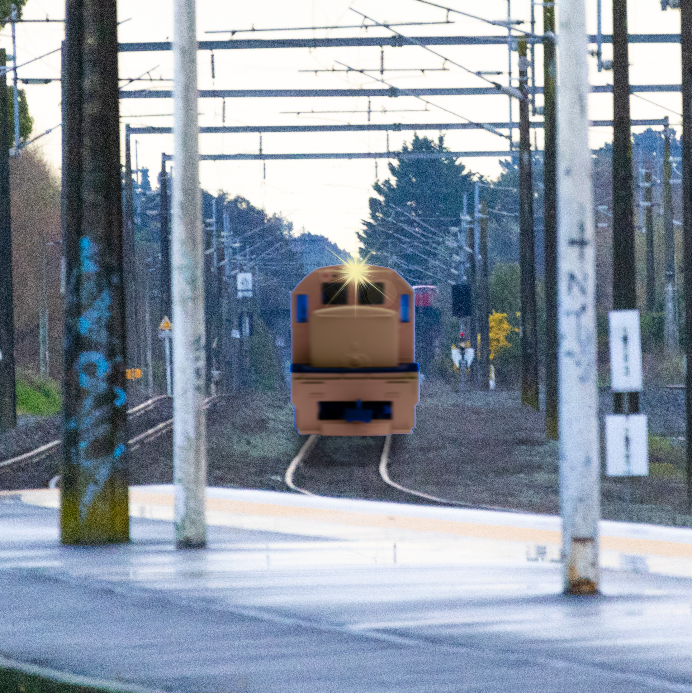
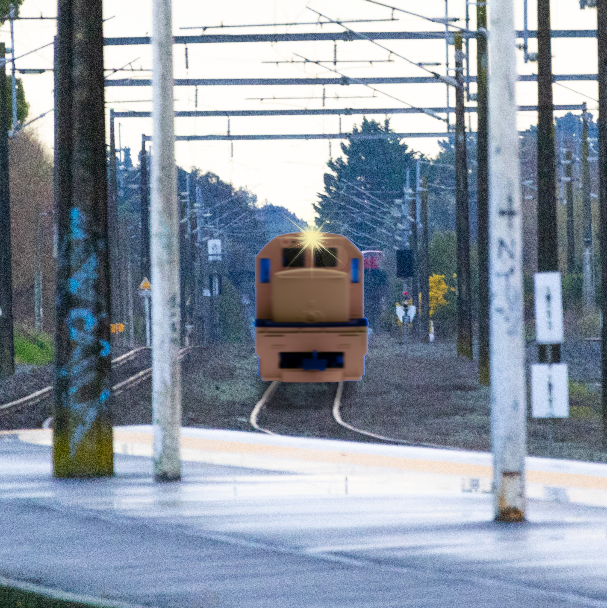

AS 2.3 Photography Art Boards
Exploring Surrealism Through Miniatures and Realism
This project seeks to delve into the surrealist genre using miniatures and tilt-shift photography to blur the line between reality and fantasy. By combining real trains with miniatures, I aim to evoke the confusion that often arises in the modern digital age, where it is increasingly difficult to distinguish between what is real and what is manipulated.
The concept revolves around making viewers question their perception of size and space. By taking photos of miniature trains and real trains and swapping their environments—miniatures on real tracks, real trains on model tracks—I'll create a surreal landscape that challenges traditional photography norms.
In addition to using tilt-shift techniques, I’ll experiment with lens imperfections, such as those found in Polaroid or disposable cameras, to further emphasize the blurred boundaries between reality and imagination. The imperfections will add a nostalgic touch, evoking memories of analog photography, which in itself adds another layer of reality distortion.
Conceptual Photography and Identity
Another theme I'm exploring is identity. The idea of identity in photography goes beyond simple portraits—it's about capturing the essence of how individuals project themselves in different social settings. This concept will take form in "movie poster" style portraits, where I capture people as though they are starring in their own personal film, reflecting how we often put on a show or mask depending on our surroundings.
By capturing multiple versions of the same subject, with small yet significant changes such as clothing, lighting, or background, I aim to portray the fluidity of personality. A person is never quite the same in different environments, and photography is the perfect medium to explore this performance of identity.
Moreover, each portrait will contain subtle surreal elements, perhaps in the form of unnatural lighting, or dream-like backgrounds, enhancing the notion that identity is fluid and often a performance based on our audience.


 
